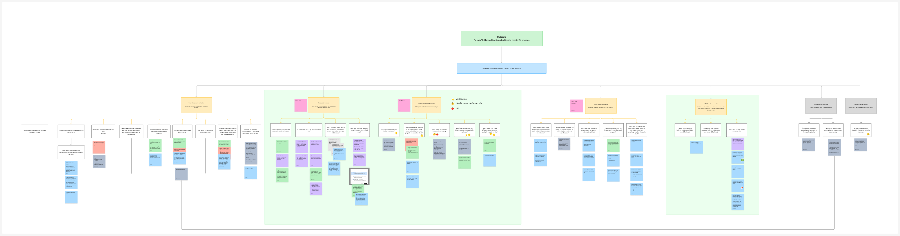
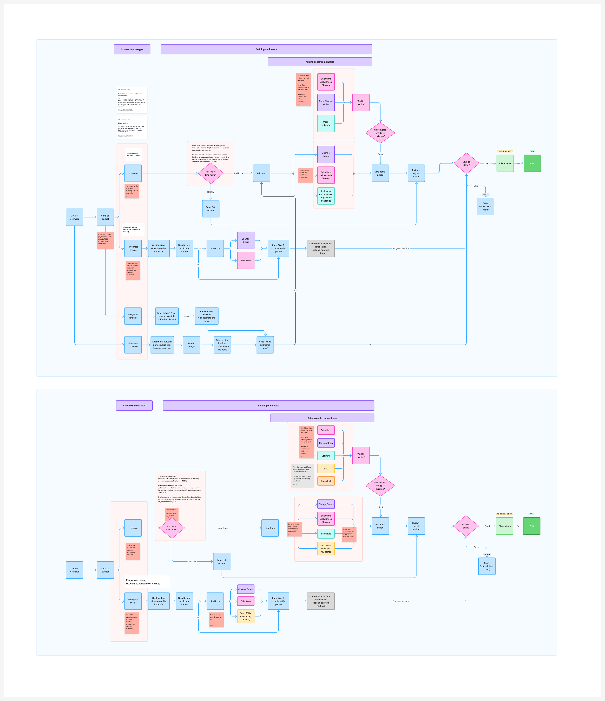
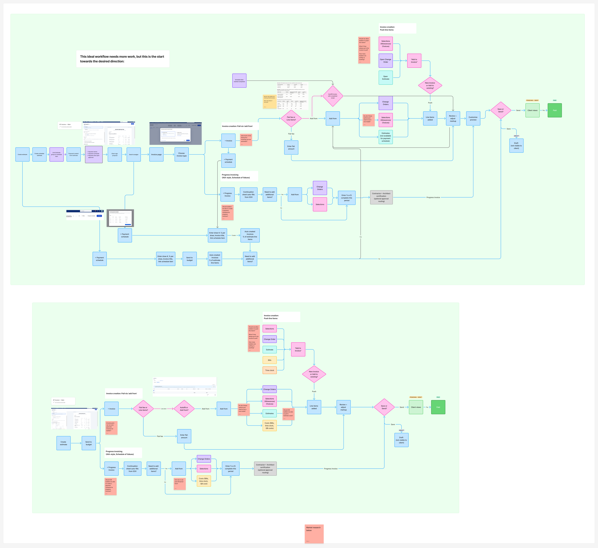

Invoice Adoption Discovery
Progress invoices went GA in December, but plenty of builders still invoice somewhere else. This discovery asks why they stay in QuickBooks or Excel, where those tools break, and what it would take to move them back. Each round changed what we asked next.
The short version
Builders don't leave Buildertrend invoicing because one feature is missing. They leave because the invoice doesn't look like their estimate, they don't trust what syncs to their books, and nothing shows them the path from budget to invoice. The research moved through five steps, and each one set up the next:
- Round 1 asked why builders stopped and produced six topics.
- The reframe turned the question into "what would move you back?" and Round 2 collapsed the topics into three themes.
- An opportunity solution tree mapped every quote and idea to those themes and narrowed them to two problems: an unclear path and too many steps.
- Mapping the flow today and sketching the ideal one turned each problem into a first answer: the payment schedule after send to budget, and autofill.
- Market research and the first autofill feedback showed what both answers still need: presentation control and a way to see what was pulled in.
Why this matters
Builders want confidence that their invoice is correct and will look professional to their clients. When Buildertrend can't give them that, the invoice moves to Excel or QuickBooks, and the job's data stops flowing through the rest of the product.
That matters beyond one screen. An invoice sent outside Buildertrend is a job whose estimate, bills and labor never meet the client's request for payment. It is also a builder who is one step closer to running the whole job somewhere else.
Three people touch every invoice: the builder or office manager who builds it, the bookkeeper who checks what's billable, and the client (sometimes an owner's rep) who compares it to what they agreed to pay. Most of what follows is about the first two making it right and the third being able to trust it.
How we approached it
I ran two rounds and changed the question between them. The second round only made sense because of what the first one could not tell us.
Two rounds, two questions
- Round 1: why did you stop? 13 builders who had stopped invoicing in Buildertrend, plus five more conversations with internal customer success and accounting contacts. What gaps did you hit, and what do you use instead?
- Round 2: would you move back? Nine builders, six fixed price and three open book. How do you invoice today, what does that tool do well, where does it break, and would you move if we closed the gap?
Small samples. Read the themes as patterns, not rates.
Round 1: why builders stopped
The first round was framed around Buildertrend's gaps. It surfaced six topics, ranked by how often and how strongly builders raised them.
1. Another system is already in place
- QuickBooks is the book of truth. Years of data live there, and builders trust it over Buildertrend.
- Builders fear corrupting their QuickBooks history, and fear Buildertrend locking an invoice after sync.
- Builders on Business Central or Salesforce have no integration path.
- Buildertrend is seen as project management, not a financial system.
2. Invoice presentation
- The client invoice doesn't look like the approved estimate: AIA format, estimate columns, grouping, estimate order.
- Descriptions don't carry through, so lines that share a cost code can't be told apart.
- Builders want price ranges, and Buildertrend has no range concept.
- Progress invoices already cover part of this, but builders didn't know.
"No range makes no sense. So we're still doing it via Excel." Torin R.
3. Time to learn
- The blocker is the effort to adopt, not missing features. Small teams lack the people to learn new workflows.
- Training videos are split by task and don't show bid to invoice end to end.
- Builders aren't sure they're using it correctly, so they stay with what they know.
"It's the effort it takes to retroactively apply it to our current processes." Noah G.
"The biggest downfall is not Buildertrend shortcomings, it's the knowledge of how to utilize the tools." Amanda W.
4. Habit and comfort
- Builders already invoice informally or in QuickBooks, and moving that into Buildertrend's structure is the real cost.
- Buildertrend is not as intuitive as we think.
5. Reporting
- Builders want budget snapshots.
- A WIP report customizable by date would remove the need for QuickBooks job costing reports.
- Buildertrend reporting is what justifies leaving QuickBooks Desktop, and it also keeps builders in Buildertrend.
"If this were tied in with all of everything else, then I would immediately be pushing for using it." Rex M.
6. Timing
- Some builders aren't ready to open Buildertrend to clients yet.
- Others are slowing down during a move to a new business model, though all their work is still processed in Buildertrend.
What Round 1 left open
The list was long and it mixed very different kinds of problem: a missing feature, a feature builders didn't know existed, an integration, a habit. Only some of them were about the invoice screen. Three of the six (time to learn, habit, another system in place) had nothing to do with a gap we could close in the UI. That raised the question the next round was built to answer: which of these actually keep a builder out, and would closing one bring them back?
The reframe: from feature gaps to adoption
Round 1 started from the hypothesis that Buildertrend invoicing is clunky and needs a smoother workflow. The results didn't confirm or refute that. They showed that builders were comparing Buildertrend to something that already worked for them. Leadership asked for the next round to test the hypothesis directly instead of assuming it.
What changed in the research
- The starting point. Builders walk us through how they invoice today in whatever tool they actually use: QuickBooks, Sage, Salesforce, NetSuite, Business Central or Excel.
- The question. What do you like about it, where do you hit snags, and if Buildertrend closed that gap, would you actually move?
- The recruiting. We deliberately included both contract types, six fixed price and three open book, because Round 1 hadn't separated them.
- What we recorded. For each builder: how they invoice today, their pricing model, and the single blocker that matters most.
One blocker per builder was the discipline that mattered. Round 1 let every complaint count equally. Round 2 forced a ranking.
Round 2: what would move them
Nine builders, each asked for their one blocker. Three themes ranked highest. Contract type below is each builder's stated pricing model: three open book and six fixed price. "Mix" means both types raised the theme.
Theme A: The invoice doesn't match the estimate
The invoice doesn't look like the approved estimate
Clients lay the invoice next to the proposal to check it against what they agreed to pay and what the request for payment is. Builders want the estimate's groups instead of cost categories, less line detail, percent invoiced shown, and control over presentation. The answer is builder-controlled disclosure, not one fixed format.
Contract type: Mix
The estimate is re-entered into accounting by hand
Builders retype the signed estimate into QuickBooks or Excel, or rebuild the AIA format and schedule of values by hand. Buildertrend shows too much line-item detail to the client, and the builder wants control over how it is presented.
Contract type: Fixed price
Heard from Demetri M. (too much line-item detail), Priya G. (estimate groups, AIA format on most jobs), Andrew M. (percent invoiced missing from the client invoice) and Skylar C. (re-keys the entire estimate).
Theme B: Buildertrend can't do the accounting job, so QuickBooks stays the system of record
Reporting and the chart of accounts keep them in QuickBooks
- Unbilled charges: tracking which bills haven't been invoiced.
- P&L: markup needs to show as profit or income.
- Estimates versus actuals.
- AP by vendor and a billing forecast live in QuickBooks or Excel, showing how much the builder owes each sub or supplier.
- Some builders don't trust sync and worry it will corrupt their QuickBooks data.
- Missing bills features: expenses (a receipt for an already-paid item) and credit card credits (refunds).
Contract type: Mix
Upstream setup was never finished
The setup invoicing depends on was never completed, so the blocker comes before the invoice. Cost code setup is the clearest example.
Contract type: Mix
Vendor retainage doesn't exist
Builders can't hold back a percentage on vendor bills. Contract type: Mix
Anything that syncs becomes immutable
Builders can't edit an invoice after sync. They are usually fixing a mistake, for example a cost code edit.
Contract type: Fixed price
The job model can't produce their invoice
Open-book vendor and bill detail doesn't persist onto the invoice, so a 100-line vendor bill collapses to a bill title. Cross-job invoicing and a single closing settlement don't fit the job model.
Contract type: Mix
Heard from AJ E. (sync trust, AP and credit card segregation, reporting depth), Damaris R. (can't edit a synced invoice without rebuilding it), Stephanie S. (vendor retainage, cross-job invoicing) and Cathie M. (needs profit hidden in Buildertrend, so billing happens elsewhere by design).
Theme C: Buildertrend doesn't guide the builder to the next billing step
Feature discoverability
Some builders didn't know progress invoices or payment schedules existed, or that percent-complete billing and billing from bills were already supported.
Contract type: Mix
Buildertrend doesn't know when it's time to invoice
Billing runs on milestones, draws or monthly percent complete, and Buildertrend doesn't prompt it. One invoice can need several billing triggers. For open-book builders, we have all the data and could know when they should be invoicing.
Contract type: Fixed price
The person we talked to doesn't own the decision
Some builders invoice outside Buildertrend because of a long-standing business decision. The owner is stuck in their habit.
Contract type: Fixed price
Heard from Skylar C. (awareness), Alex D. (one invoice needing multiple billing triggers, plus presentation control, and no authority to make the switch) and Stephanie S. (billing from bills).
Who we heard from: one blocker per builder
Each builder named one blocker. The pattern across them is that no two blockers were the same feature.
- Demetri M. · invoices in QuickBooks, re-keyed from the signed proposal · fixed price, milestone · blocker: too much line-item detail shown to the client.
- AJ E. · QuickBooks plus bill.com · cost plus, open book · blocker: accounting robustness, meaning sync trust, AP and credit card segregation, and reporting depth.
- Damaris R. · Buildertrend, then QuickBooks · fixed price, draws · blocker: can't edit a synced invoice without deleting and rebuilding it.
- Priya G. · QuickBooks, with the AIA format rebuilt by hand · fixed price, draws · blocker: invoices show cost categories, not the estimate's groups.
- Skylar C. · QuickBooks Desktop, estimate re-keyed, schedule of values in Excel · fixed price lump sum, monthly percent complete · blocker: awareness, plus estimate sync and vendor retainage.
- Andrew M. · Buildertrend, then rebuilt in Excel to add percent complete · hybrid quoted plus cost plus, monthly percent complete · blocker: percent invoiced missing from the client-facing invoice.
- Alex D. · QuickBooks, off weekly PDF printouts from Excel · milestone billing, 50/50 under $100k and 10-15-15-60 over · blocker: one invoice needs multiple billing triggers, plus presentation control.
- Cathie M. · QuickBooks · no monthly billing, WIP settles once at closing · blocker: the owner requires that profit is never visible in Buildertrend.
- Stephanie S. · bills exported to Excel, monthly invoice hand-built and attached to a QuickBooks invoice · cost plus · blocker: retainage on vendor bills, plus cross-job invoicing.
How one round led to the next
The Round 2 themes aren't new topics. Each one is a Round 1 topic that got sharper once builders had to pick a single blocker.
Round 1 topic to Round 2 theme
- Invoice presentation became Theme A. It stayed the most concrete and fixable, and the sharpening was that it's about control over disclosure, not one better format.
- Another system in place and Reporting became Theme B. "QuickBooks is the book of truth" turned into specifics: reporting depth, sync trust, immutability after sync and gaps like vendor retainage.
- Time to learn and Habit and comfort became Theme C. "No time to learn" became something designable: Buildertrend doesn't prompt the next billing step, and features that exist go undiscovered.
- Timing didn't survive. It was real for individual builders but not something we could design against.
Contract type added one more layer. Re-entering the estimate by hand, being unable to edit after sync, and the missing billing prompt came only from fixed-price builders, who have a pre-agreed estimate and milestone to match. Open-book builders raised bill detail and cost verification instead. With nine builders, that's a pattern to test, not a rate.
From themes to an opportunity solution tree
The Round 2 themes told us what was wrong. They didn't tell us what to build first. To get from one to the other I mapped everything onto an opportunity solution tree, so every idea had to trace back to something a builder actually said.
How to read the tree
- Outcome: re-win 100 lapsed invoicing builders to create two or more invoices.
- Opportunity: "I can't invoice my client through Buildertrend without friction or distrust."
- Branches: seven sub-opportunities, each with its own builder quotes underneath.
- Leaves: the solutions and open questions the team raised for each quote, and a marker for whether we'd address it, needed to think harder about it, or would not.

The full opportunity solution tree. Click to open at full size.
The seven branches
Open any branch to see the builder quotes and the ideas the team raised under it.
1. Trust what syncs to my books
"I can't trust that what BT pushes to my books is correct."
- "I don't understand how Buildertrend maps to QuickBooks." Idea: help builders understand the integration without a full setup, compare and contrast cost codes from both systems, and add a quick in-app guide to show time to value.
- "My invoice syncs to QuickBooks too early." We needed to validate when builders expect to sync. Sending currently does too many things at once: it makes the invoice visible, requests payment and sends to accounting.
- "I don't understand the direction of the sync" and "I'm running into too many sync failures." Idea: identify the errors builders typically hit and write better language for getting out of them.
- "Mistakes require deleting the invoice in QuickBooks." Idea: allow minor tweaks and resync, with a note that we'd have to work through whatever comes up to get to a true live sync.
- "I want to use BT invoices, but my accounting system isn't integrated." Idea: a public API. The team flagged unknown effort and some history of hesitation to build one.
- "It didn't sync to the correct account." Idea: detect when the builder is logged into a different QuickBooks account than the one Buildertrend is set to.
2. Unclear path to invoice
"I do this once a month and can't re-find the path." Owners: Maxx and Cade.
- "I have to jump between multiple screens to create an invoice." Idea: all invoiceable line items in one table, the different ways to create an invoice surfaced up front, and suggested items pulled in.
- "I'm not always sure what kind of invoice I need." Ideas: ask at send to budget whether the builder wants a draw schedule or a payment schedule, hinge the invoice type on the proposal, allow a payment schedule after send to budget, auto-generate draft invoices, and make the invoice button dynamic.
- "I want an end-to-end workflow walkthrough." The team asked whether builders are unaware of the tutorials or whether the tutorials are scattered and out of date.
- "I can't tell which starting point leads to the invoice I need." Ideas: invoice directly from the budget for cost plus, view the invoice beside the budget, and pre-select a builder's most used type.
3. Too many steps to send an invoice
"Getting to a sent invoice takes too many steps." Owners: Tracy and Trevor.
- "Entering percent complete across line items is tedious." Bulk editing was looked at during a smash week and found complex but doable.
- "I have to regroup the line items Buildertrend auto-adds before every send." Ideas: show the estimate description grouped by estimate group in the same order as the estimate, let builders sort line items, and stop consolidating cost code rows.
- "I'd like to pay or review my invoice without saving."
- "It's difficult to make sure non-billable costs aren't included." Idea: mark cost codes as non-invoiceable so the setting carries to line items.
- "I have to add from many different cost areas." Idea: open the add-from options on one page.
- Ideas to package or automate building the invoice, and a monthly job costing budget snapshot.
4. Invoice presentation control
"What the client sees isn't right and I can't control it." Owners: Maxx and Tracy, started in Q4.
- "I want the invoice to look like my estimate or proposal." Ideas: group line items by estimate group, and persist how the estimate was presented.
- "I want to group by cost code and surface the estimate description." Ideas: surface and edit the estimate description, show it in the add-line-item modal, and collapse line items into divisions for the client view.
- "I don't want my internal cost codes visible to the client." Ideas: hide cost code numbers, cleaner print layout, and column changes on the builder side that sync to the client preview.
- "I want to bill a specific client and add multiple billing contacts." Idea: a billing entity field separate from the client name.
- "When I create an invoice at month end I want attachments pulled in a specific order."
5. Go-to-market and education
"I didn't know that this feature exists, or I'm hesitant to learn it with the time that I have."
- "I create draws outside of Buildertrend because I didn't know it offers it." The same for AIA-style invoices. Idea: improve workflow discoverability for invoices.
- "I don't have the time to learn how to use this." Ideas: make switching back look worth the time, reach out to users once their fix has shipped, record happy-path videos, and highlight perceived time savings such as not rebuilding every line item in accounting.
- A gap noted along the way: no QuickBooks classes support for commercial versus private work.
6. Document trust and data loss
"I can't trust the document survives operations."
- "If the invoice is edited or deleted after I reconcile, it throws off my books." The team couldn't tell what builders were trying to do when that happened.
- "I can correct small mistakes after my invoice has been sent to accounting." Idea: lock financial fields instead of locking everything, or resolve it with a true two-way sync.
7. Credit and underage leakage
"Credits and underages leak onto the client invoice."
- "Credits and underages shouldn't show up on what the client sees." The team pushed back: builders need some way to tell a client they are being charged more or less.
Branches 6 and 7 are greyed out on the board. Branches 2, 3 and 5 are the ones highlighted as work we'd take on. Open questions and counter-arguments stay on the tree on purpose.
Two problems, and the answers we picked
The highlighted branches collapse into two problems: an unclear path to the invoice, and too many steps once you're there. For each one we named what was behind it and the first answer to try.
Problem 1: an unclear path
- Builders don't know what already exists. Progress invoices and the payment schedule are there, but builders never found them and left without retrying. Many hand-build their own draw 1, draw 2, draw 3 invoices.
- Nothing guides them from budget to invoice. Training is split by task and doesn't show bid to invoice end to end, and Buildertrend never prompts when a draw is due.
- Habit and comfort. Moving invoicing into Buildertrend's structure is the real cost, so builders stay with what they know.
Our answer: enable the payment schedule after send to budget
Builders create it right after they send the estimate to budget, so the path from budget to invoice is visible instead of hand-built. It also sets us up for the ideal invoice workflow below.
Problem 2: too many steps
- The invoice gets rebuilt by hand. It doesn't match the approved estimate, so builders retype it in Excel or QuickBooks. About half of invoices are typed with no link to an estimate, change order or bill.
- QuickBooks stays the system of record. The work is repeated there, and reporting like budget snapshots, WIP and monthly exports keeps builders in QuickBooks.
Our answer: autofill open-book invoices
Invoices fill from the bills and costs already in Buildertrend, so the builder reviews and sends instead of retyping.
Each answer is a first step, not the whole fix. Choosing them is what made the next two pieces of work possible: mapping how invoicing works today, and sketching where it should go.
What we expected to happen
Before the payment schedule answer reached builders, I wrote down what we expected and what we thought would go wrong. Naming the likely failure up front is what pointed the next pieces of work at presentation.
The plan
The payment schedule is now available right after send to budget. We expect payment schedule clicks to rise because builders will find it naturally, without being told it exists.
The hypothesis
We'd like to see more usage, but we believe invoice presentation will ultimately be the downfall. Today we pull every estimate line item into the invoice. Builders need a way to group it by estimate groups or by the proposal, so they aren't sending out invoices with hundreds of line items.
That hypothesis connects three things we'd already seen: the "estimate groups, not cost categories" ask in Round 2, the "regroup the line items before every send" quote on the tree, and the fixed-price builders who type line items by hand because the pulled-in version doesn't present well. The discovery of the feature and the presentation of the invoice are two halves of the same adoption problem.
The current workflow
Before designing the answers I mapped how a builder gets from an estimate to a paid invoice today, for fixed-price jobs and open-book jobs, with every decision point and the questions each one raises.

The current invoice workflow, fixed price on top and open book below. Click to open at full size.
What the map shows
- Four ways in. After send to budget a builder can start a standard invoice, a progress invoice or a payment schedule. A draft invoice isn't visible to the client until it's sent.
- Fixed price builders type line items. They are manually typing in line items instead of pulling from the estimate, because of presentation. One builder with a payment schedule specifically chose not to use that feature for this reason.
- The add-from step is a hub. Estimates, change orders and selections all feed it. For open book, bills, time clock and QuickBooks costs join them. We asked whether all of those options need to live in one modal.
- Push or pull. Change orders and selections can be added to an invoice from their own page ("add to invoice"), but we didn't know how many builders push versus pull.
- Flat fee isn't the churn risk. Flat-fee invoices churn at about the same rate as sourced line items, around 15.6% versus 15.8%. The ones that churn most, at 19.2%, are invoices typed line by line with no source. That is a presentation problem: open-book builders want to show labor and materials a certain way.
- Upstream workflows can stop invoicing entirely. For example, bills and credit card credits not working as intended upstream.
Customer quotes on the map: "What is different between the progress invoice and the usual invoice? Is it something different or almost the same?" and "I'm in a job and I have invoices up here... so Buildertrend just launched a progress invoice feature?"
Market research: how other tools do it
Alongside the interviews I reviewed how other products create, preview and send an invoice. Some are construction tools that builders mention by name. Others are general invoicing and payments products with strong flows worth borrowing from. For each one I walked the flow, captured screens, and noted what it does well and where it falls short.
Products reviewed: JobTread, QuickBooks, Buildxact, CoConstruct, Wave, bill.com, Ramp and Expensify.
Construction tools
JobTread
- Line items are grouped by phase. Builders can select phases to invoice and show group level only, or show progress amounts.
- Builders show or hide items directly on the document, and can show fees. Open book invoices bills and time.
- After pulling line items, the builder reviews the PDF view, edits and customizes it, previews the customer view, then sends.
- A budget dashboard tracks invoiced amounts, and a documents list tracks invoices, bills and purchase orders together.
- When creating a payment request the builder chooses the document type: deposit, bill or invoice.
Our read: intuitive for understanding job financials and for creating, customizing and sending an invoice. Concerns: the eye icon for hiding items is easy to miss, and that level of granularity may overwhelm builders, so a middle ground may be better. By comparison, Buildertrend builders can only select at the line item level.
Buildxact
- The user selects a contract type and creates invoices by project stage, as a percentage of the contract amount. For example, 10% of the contract for the base stage.
- Change orders can be added to an invoice.
- Builders can edit the email template, preview the email, and save email presets so they don't retype the message.
- A summary shows contract price, change order total, pending invoices, total invoiced so far and money received so far.
Our read: flows seamlessly from creating the invoice to sending it.
CoConstruct
- Create a new invoice, or invoice from estimates or change orders, and choose who the invoice is shared with.
- After creating, the invoice page becomes a PDF that's still editable. Payment history is attached at the bottom.
- Builders can preview the invoice and view job finances.
Our read: simple and easy to understand, with a light interface. The downside is little customization of what the client receives.
General invoicing and payments tools
QuickBooks
- Requesting payment is kept simple: you invoice someone, and that's it.
- Builders create and customize the invoice on the same page, so what they see is what the customer sees. Style templates are set up from that one screen.
- A "take a tour" walkthrough, tabs for different customer views, recurring invoices, and an organic way to sign up for online payments inside the invoice.
Our read: clear information hierarchy, with who you're sending to and the balance due at the top. The sticky bottom bar keeps the main actions reachable. Customization is mostly layout, not line item contents.
Wave
- A "Launch Pad" gives a guided experience that is always available but never required.
- Save and continue works as a draft state. A split button lets users save and send, or save and continue customizing.
- The invoice PDF preview shows amount due and payment amount, in desktop and mobile customer views.
- Builders can schedule a send, schedule recurring invoices, record payments manually and add customers on the fly.
- An invoice can be edited even after it's paid. If the price increases, it's marked partially paid.
Our read: lots of good interactions to reference. The split button is something Buildertrend could use directly.
bill.com
- Everything a user needs for a task lives in one flow. Customers and vendors can be added without leaving it.
- Full previews of what the customer will receive, with changes allowed in the preview, so the user gets it right the first time.
- An invoice timeline shows where the user is in the process and what's left.
Our read: a great model for keeping a user on track without navigation.
Ramp
- A thorough walkthrough before account creation, with a checklist and the option to sign up after each section.
- Invoices are scanned automatically, with a split screen showing the invoice beside the information pulled from it, so the user can confirm what they're paying.
Our read: breaking information into clear steps keeps the user focused. The split-screen verification is directly relevant to autofill, where builders told us they can't tell what was pulled in.
Expensify
- A simple flow: create an invoice, click to add any expenses, then send for payment.
- An option includes receipt images in a PDF attached to the invoice.
Our read: a light way to attach cost backup to an invoice.
Patterns worth taking
- Customize and preview in one place. QuickBooks, bill.com, Wave and JobTread all let the user shape the invoice while seeing what the client sees.
- Control at the group level. JobTread's group-level view and show or hide on the document go straight at the "too much detail" blocker from Round 2.
- Save and continue. Wave's split button separates sending from continuing to customize.
- Verify what was pulled in. Ramp's split screen shows the source beside the extracted data.
- Guided onboarding that isn't a gate. QuickBooks' tour, Wave's Launch Pad and Ramp's walkthrough all educate without blocking.
- Payments where the invoice is. QuickBooks and Wave let builders sign up for online payments from inside the invoice instead of in settings.
Open questions from the research
Is there any evidence that builders skip Buildertrend invoices because they want clients to pay through QuickBooks Online? The research hints at it but we haven't tested it. And how fine should presentation control get before it overwhelms the builder?
The ideal workflow
With the current flow mapped, I sketched where it should go. The board labels this a start toward the desired direction, and it is still changing.

The ideal invoice workflow, work in progress. Click to open at full size.
The two questions it's built around
- How might we make the path to invoicing clearer?
- How might we reduce the steps to invoicing?
What changes from today
- The path starts earlier. The payment schedule is created at or after send to budget, and builders can link an estimate group to a schedule item. Marking a schedule item complete can autofill the invoice with completed scope.
- Choosing the type is guided. The invoice page asks what type of invoice, instead of presenting a menu to decode.
- One place to build and customize. We want builders to see the invoice they build and customize it in one place: add from, review and adjust markup, customize the preview, then save or send.
- Open book gets its own inputs. Autofill or add from, with costs (bills, time clock, QuickBooks costs) alongside estimates, change orders and selections.
- Progress invoices stay AIA-style. The continuation sheet autofills from the schedule of values, builders enter percent or dollars complete this period, and optional contractor and architect certification routes approval.
Questions still open on the map
- Should builders be able to push line items, or do they always go to the invoice to pull? How many do each?
- Do all the add-from options need to be in one modal?
- How much of fixed-price invoicing can we automate, and at what point can we auto-generate invoices for the builder?
- Why are builders entering flat-fee invoices at all, and what would removing it affect?
- Should open-book builders be able to pull in estimate costs, and create a payment schedule for progress invoices?
- Can the autofill banner be reused on progress invoices?
- The accounts payable work on another team connects here.
Autofill: what builders said
Autofill for open-book invoices was the first answer to Problem 2 to reach builders. We went in to learn five things.
What we hoped to learn
- Usefulness. Has autofill made creating invoices easier or faster?
- Accuracy. Is it pulling in the costs as expected, adding anything unwanted or leaving anything out?
- Reviewing. Is it easy to review what autofill added and check the invoice before sending?
- Control. Do builders want more control over what it pulls, such as a date range or types of costs?
- Improvements. What would make it more useful?
What we learned
- Reconciling is still hard. Once costs are on the invoice, it's difficult to reconcile what's being invoiced, so autofill didn't make invoicing much easier or faster.
- There's no way to withhold costs. Builders can't exclude specific costs from ever being invoiced, so autofill isn't pulling the most accurate items.
- Presentation is a chicken-and-egg problem. Open-book invoice presentation doesn't meet expectations yet, so builders don't see why they'd use autofill.
- Trust is the cost. Builders don't fully trust autofill because it doesn't pull all the correct items. They double-check the invoice and spend time hunting for what hasn't been added.
What it means
- Builders need to exclude certain line items and set constraints.
- They need better naming conventions and presentation.
- They need a better way to reconcile costs, with what's been pulled in and what hasn't easy to see.
- They need visibility into why certain line items aren't pulled in.
- Better invoice presentation is a precondition. Without it builders won't want autofill, and we'd have to be smart enough to exclude certain costs.
- Follow up with interviews to learn more about their process.
Where this loops back
The autofill findings point straight back at branches of the tree: presentation control, non-invoiceable cost codes, and trust in what ends up on the invoice. The answer to Problem 2 can't ship ahead of the presentation work it depends on.
What it changes
Each decision follows from the step before it. The order is the argument.
- Presentation control comes first. It was the most concrete topic in Round 1, the first theme in Round 2, the hypothesis for what would break the payment schedule launch, and what the market research pointed to: the tools builders trust let them shape the invoice and see the client's view in one place. Builder-controlled disclosure and client preview lead the roadmap.
- Make the path visible. Builders who "didn't know it existed" appeared in both rounds, and "unclear path" was the first branch on the tree. The first answer is the payment schedule right after send to budget, which also seeds the ideal workflow.
- Autofill waits on presentation and control. Filling an invoice from bills answers rebuilding it by hand, but builders won't trust it until they can see what it pulled in, exclude what they never bill, and present the result the way they present the estimate.
- Fix the edit-after-sync rule. A synced invoice that can only be deleted and rebuilt teaches builders to stay in QuickBooks, regardless of invoice type.
- Reach the person who decides. Some builders never reach the invoice screen because setup was never finished, and some can't act because the owner already chose. The research and the design both have to start earlier and reach further than the invoice.
Related work
The invoice work that led here is in Frictionless Invoicing. The selections side of the same billing story is in Selections Reimagined.
What's next
- Prototype builder-controlled disclosure on the client invoice and test it with the builders who raised Theme A.
- Learn from the payment schedule launch. Check whether discovery rises as expected and whether presentation is where it stalls.
- Follow up on autofill with interviews about how builders reconcile, exclude and present costs.
- Scope edit-after-sync: when a synced invoice can safely be recalled, and what has to be true in accounting first.
- Keep the adoption question running with builders who invoice outside Buildertrend, including the owner where it isn't the same person.
Reflection
- Ask the adoption question earlier. Round 1 listed feature gaps. Round 2, reframed around why builders stay in their current tool and what would move them, gave a clearer picture of what is actually blocking adoption. Next time I'd start there.
- Talk to the person who owns the decision. Several builders could describe their blocker clearly and still couldn't act on it. Next time I'd recruit the owner alongside the person who builds the invoice.
- Make people pick one. Round 1 let every complaint count. Asking each builder for a single blocker in Round 2 is what produced a ranking we could use.